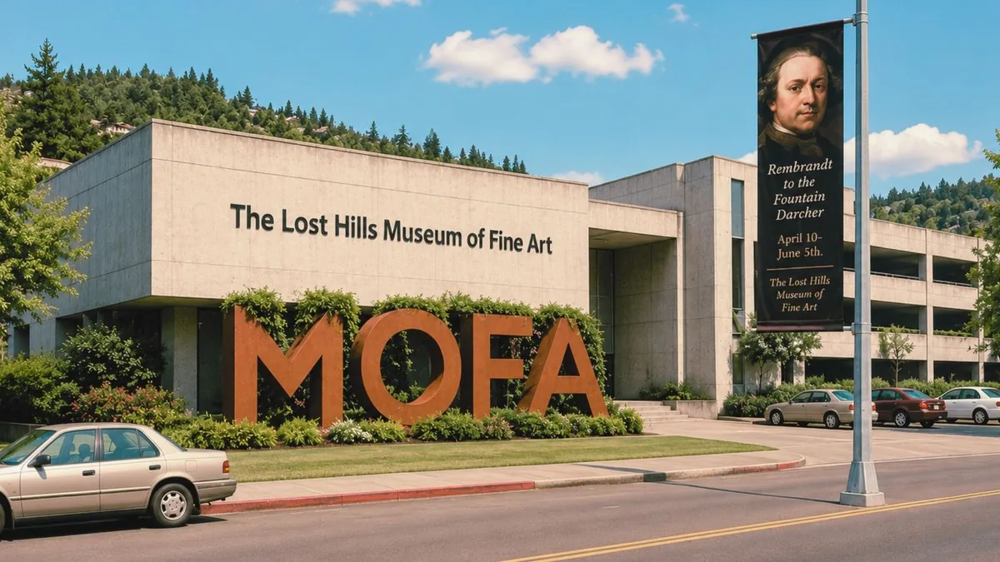
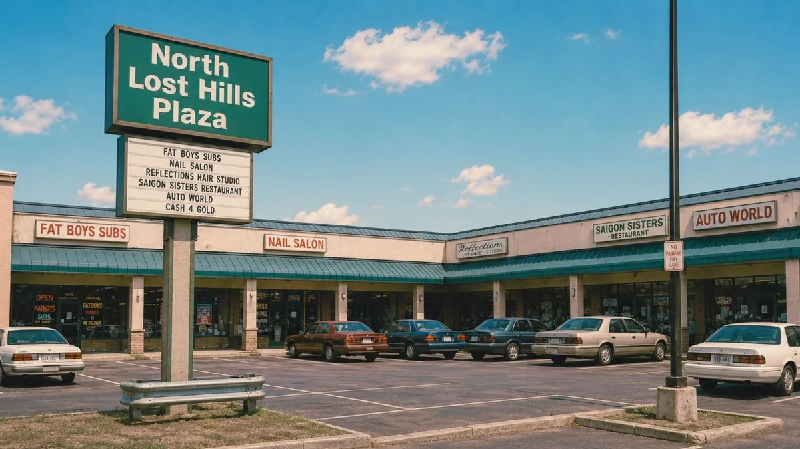

Lost Hills Museum of Fine Art
The Lost Hills Museum of Fine Art (MOFA) is the regional art museum, located at 4 Civic Center Way. Free admission on Wednesdays; school tours by reservation. MOFA's exhibitions program is supported in part by Shadewater Laboratories, the City of Lost Hills Arts Trust, and Northwestern Interstate Bank.

Current Exhibitions
"The Shape of Distance" — Gallery 4
A special exhibition presented in cooperation with Shadewater Laboratories. Twelve artists from the Pacific Northwest were invited to interpret notions of distance, perspective, and the felt nearness of places once seen. The exhibit features a complementary digital imaging program in which works are photographed using Shadewater's high-resolution imaging system; visitors can view the digital files at the gallery's public terminal.
Exhibit Catalog — "The Shape of Distance"
Gallery 4 · 12 works · May 1993 · digital comparisons at gallery terminal
| # | Title | Artist | Medium / Year | Note |
|---|---|---|---|---|
| 1 | Still Water, Tabor Ridge | P. Resor | Oil on linen, 1992 | Digital copy: matches |
| 2 | The Old Mill at Noon | C. Halvorsen | Watercolor, 1991 | Digital copy: matches |
| 3 | Catfish Lake, Looking East | R. Salter | Watercolor, 1991 | Digital copy: shows north shore instead of east. Artist states there is no north shore composition in this series. |
| 4 | Long Field | J. Inman | Photograph, 1992 | Digital copy: matches |
| 5 | Front Gate (Autumn) | M. Okuro | Ink wash, 1990 | Digital copy: matches |
| 6 | The Quiet House | [attribution unstable — two names on file] | Oil & graphite, 1993? | Digital copy: shows an interior. Physical work shows an exterior. Curatorial staff state both images are correct. |
| 7 | Foothills Grid, May | T. Bransen | Acrylic, 1992 | Digital copy: matches |
| 8 | Evening, East Plaza | D. Lund | Photograph, 1992 | Digital copy: matches. One figure in photograph is not present in the gallery digital file. Gallery terminal shows same figure but in a different position. |
| 9 | Shoreline with Instrument | B. Meerwald | Mixed media, 1993 | Work completed specifically for this exhibit. Digital file shows what appears to be a different body of water. Artist declined to comment. |
| 10 | Root System | N. Vestergaard | Pencil on paper, 1989 | Digital copy: matches |
| 11 | Road, No Terminus | S. Okafor | Oil on canvas, 1992 | Digital copy: matches |
| 12 | Untitled (Corridor) | [name redacted by artist request] | Digital print, Shadewater imaging, 1993 | Physical work: not located. Digital file: present on gallery terminal. Digital file does not remain on screen if observed for more than approximately 40 seconds. [curatorial note removed] |
"Quiet Forest" — standing collection (Gallery 1)
MOFA's collection of regional landscape painting, 1880s to present.
"Civic Light" — Shadewater digital imaging program (Gallery 3)
A rotating public program showcasing photography produced with Shadewater's civic imaging systems. Gallery 3 temporarily closed 05/19.
Upcoming
- "Northwest Quiltmakers" — opens June 1993, Gallery 2
- "Children's Drawings of Catfish Lake" — opens July 1993, Atrium
- "Corridor: New Imaging Works from Shadewater Labs" [show postponed indefinitely]
School Tours
MOFA offers free, docent-led school tours for grades K–12. The Children's Care Wing program at Lost Hills Regional Medical Center provides bedside tours on Thursdays via CityNet.
Visit
| Hours | Open |
|---|---|
| Tue–Sat | 10:00–17:00 |
| Sun | 12:00–17:00 |
| Wed (free) | 10:00–20:00 |
| Mon | closed |
Admission
Adults $4 / Seniors & Students $2 / Children under 12 free
CityNet members: free
From the Curator
— E. Bittner, Curator
Public Imaging Terminal
Gallery 4 contains a Shadewater-sponsored CityNet imaging terminal. Visitors may view digitized exhibition works at the gallery; image quality on the terminal varies. Terminal logged a CityNet session between 03:17 and 03:18 on 05/21/1993. Terminal was not staffed at that hour. Log entry does not include a user account.
The Corridor Sculpture
The bronze and steel sculpture Corridor (1989) at MOFA's main entrance is on permanent loan from Shadewater Laboratories. It depicts a hallway in perspective, with the far end slightly too large relative to the near end. The artist is not listed in MOFA's records. The sculpture was removed from Shadewater's lobby in 1991 at staff request. No reason is on file.
Visitor Comments (selected, May 1993)
"Work 12 is not a print. I don't know what it is." — unsigned
"I came to see the Corridor sculpture and it was exactly as I remembered it from somewhere I've never been." — unsigned
Getting to MOFA

MOFA is located at 4 Civic Center Way, one block from North Plaza. Free parking behind the building. Nearest CityNet terminal: Sezzler lobby (two blocks south). KLHL 1240 AM broadcasts a weekly arts segment on Thursday evenings.
Recent Acquisitions (selected)
| Title | Artist | Medium | Year |
|---|---|---|---|
| Above the Mill | Pavlina Resor | Oil on linen | 1989 |
| Catfish Lake, Looking East | R. Salter | Watercolor | 1991 |
| Long Field | J. Inman | Photograph | 1992 |
| The Quiet House | [attribution unstable] | Oil & graphite | 1993? |
| Untitled (Corridor) | [name redacted by artist request] | Digital print, Shadewater imaging | [withdrawn] |
UNDER CONSTRUCTION Online image gallery in development. Image files in the gallery have been reported to display differently from the works on the wall.